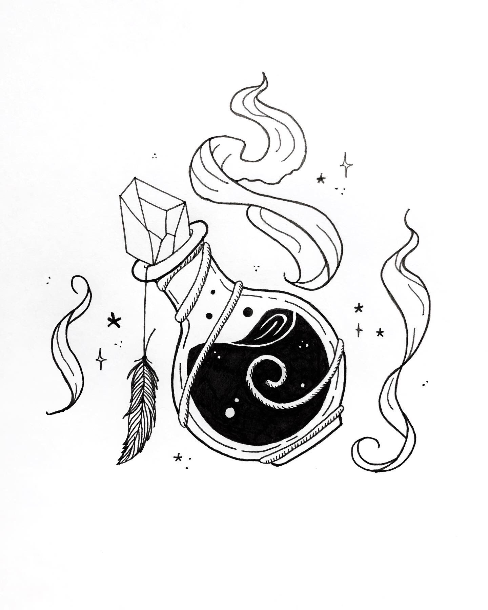

The sun was slowly setting and you could feel something else coming. So you sprint across, following the flowers, and reach the cottage but alas, it was already dark. Inside, Nicholas waits anxiously and he shouts at you for coming so late.
You both switch vials and begs you to try to run back just in time. However, someone else barges in and its figure resembled Nicholas.
"Its been long brother! I believe you have what I want." it says and subdues Nicholas with its gaze and grabs you by the waist.
"I can't believe you've been hiding inside an exact replica of your place here!" he snickers, "And dear sibling! How you've been doing so well!"
Brother? Sibling? What was he saying?
He notices your confused face, "Oh brother! Don't tell me you haven't told our dear sibling anythin-"
"It has nothing to do with you." Nicholas replies.
"HA! And why not! Has being one with the demons make me not part of your family?" he becomes triggered.
Now he starts telling of a sick and twisted past. How mother loved 'father' and had Nicholas and him as twins. Before, the demon king took to his own hands the fairest female alchemist in town and created a half-demon breed with the royal family's blood. A DISGRACE. Then, how mother left him to be a trade with some demons to keep you instead.
As he was talking, Nicholas gave you hints to use the nearest potted object you could reach on the shelf and throw its dust directly at its eye. You do what he says and at the right timing you throw it at him.
Nicholas gets free from his gaze and consumes the vial. He transforms into a demon, while, the demon releases your clutches as Nicholas now subdues him. He tells you to run away but instead of doing so, you take the vial and shove its contents into the demon's mouth.
"What're you doing!" Nicholas shouts. 
"If thats a potion that turns you demon, then this is the potion that turns you human, right?! Isn't this what'll cure him?!"
Before Nicholas could do anything, the vial empties and the demon could feel itself changing. It shouts in agony and runs away as Nicholas lowers his gaze.
"What have you done! You've ruined everything! That was NEVER meant for him!" he shouts.
You unveil your hoodie disappointed at your choice. Nicholas finds out you're 'ripe' and realizes his mistakes. He brings you home and apologizes to mother instead. She understands the situation and hugs him tightly. You head back the library and shut the door tight. You never want to go back out again.
To be continued...
There's more choices to select and more truth to be revealed.